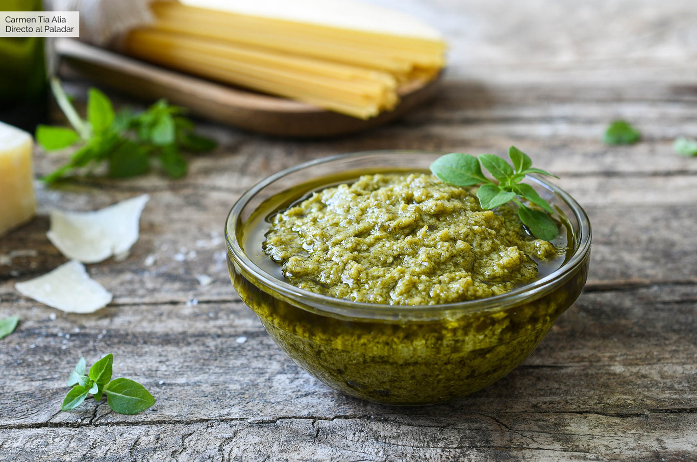
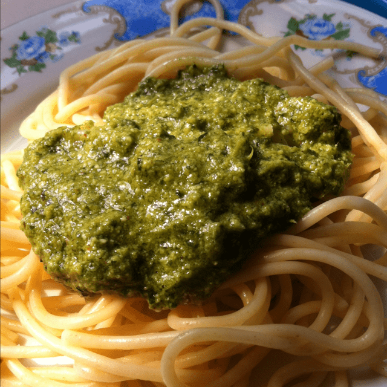
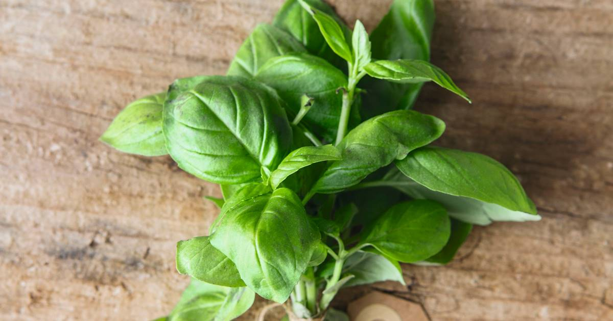
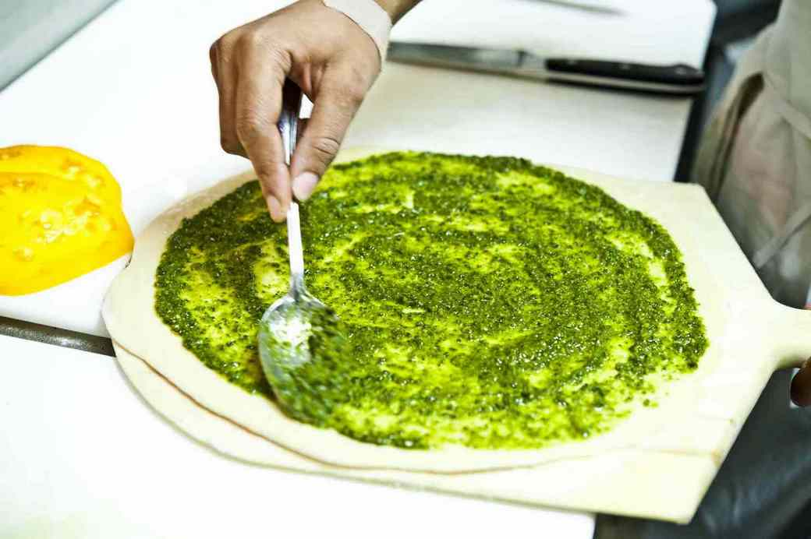

Receta Salsa Pesto




La salsa pesto es una de las salsas para pasta más conocidas de la cocina italiana. Aunque la más conocida es la salsa pesto genovesa, cuyos ingredientes son albahaca, ajo, piñones, queso y aceite de oliva, también existe el pesto rojo siciliano, elaborado con tomates secos, pimientos, queso pecorina y aceite, o el pesto de Trapani, también de Sicilia, que en este caso lleva tomates, almendras, albahaca y ajo…
Ingredientes
- Albahaca ............. 100 g
- Ajo .................. 60 g (2 Cabezas de ajo)
- Aceite de oliva ...... 400ml
- vinagre .............. 100ml
- Sal .................. 5 g (para empezar e ir probando al gusto)
Preparación
- Triturar el ajo y machacarlo en el mortero junto con la sal
- Lavar la albahaca, escurrirla bien y deshojarla
- En una licuadora echar la albahaca junto con el ajo y los 400 ml de aceite de oliva
- Se comienza a licuar y cuando se hayan integrado bien los ingredientes, ir aplicando el vinagre
- Se va proboando el punto de sal y se va echando sal al gusto, en caso de faltarle. y Listo!